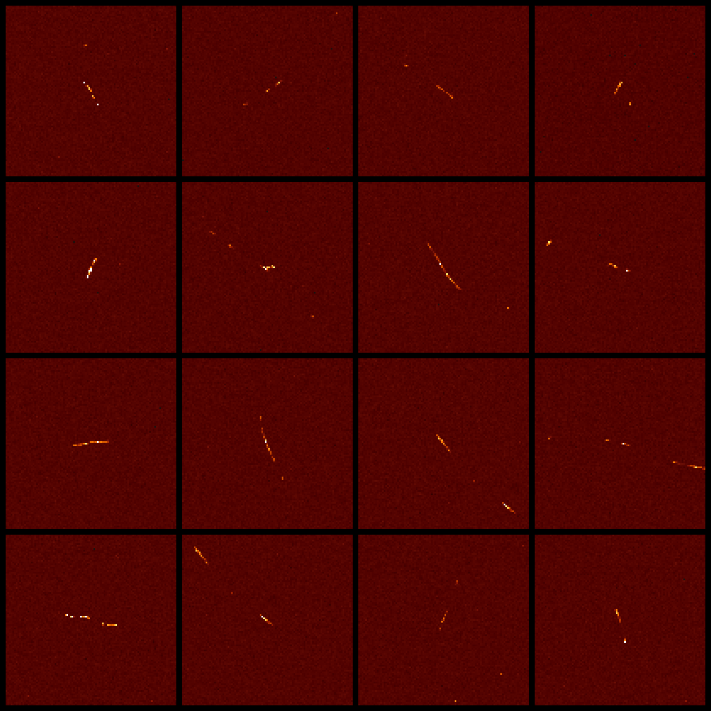

A blogpost? In this economy?! Yes, that's right. Today, we're going to be looking at how you can use an unmodified digital camera to detect cosmic rays and other charged particles.
{TODO: Cosmic rays}
First, what is a cosmic ray? Put simply, they're not actually "rays"; rather, they are high-energy particles, usually protons, that have found their way to Earth. Some come from the Sun, while others originate from outside our Solar System or even other galaxies.
The original particle is called the primary cosmic ray, and it almost never makes it to the surface. Instead, when it collides with atoms in the atmosphere, a shower of secondary particles is produced. These particles are the ones which we'll be detecting.
To actually observe these particles, we'll be using a plain old digital camera. The silicon detector it uses to record the intensity of light is also sensitive to radiation; when charged particles pass through the sensor, electrons are ripped from the atoms of the photosites, producing charges that can be read out just like a regular image. This effect is sometimes seen as a white speckle pattern in photos of radioactive samples.

Anyways, the procedure is very simple. Just put the lens cap on your camera, put it in a dark place with the sensor facing the zenith (straight up), and leave it to take some pictures. With a little luck, you'll be greeted by some cosmic ray tracks in your images when you come back!
A few words about camera settings:
- In theory, a shorter exposure length offers many advantages, such as increased temporal resolution and less dark current. However, this comes at the cost of more data to process. I also didn't want to cause too many shutter actuations, so I settled for an exposure length of 1 minute.
- I used an ISO of 200, which corresponds to unity gain (i.e. 1 electron equals 1 ADU) on my camera. ISO 100 would probably work well too. In general, a lower ISO is preferred since read noise is not a significant concern.
One last tidbit: my camera, a Nikon D7000, applies some transformations to raw images such as black-point subtraction and channel scaling. This is great for regular photography, but it will screw up our data. Thankfully, there is a free tool that uses USB commands to disable these adjustments.
As a bonus, this hack will also make the camera include the optical black pixels in the saved image. These pixels reside on the edge of the sensor and are blocked from receiving any light. Normally, they are used to calibrate the sensor's black point and are cropped from the final image, but cosmic rays can pass right through the opaque layer. Thus, we actually gain a tiny bit of extra detector area.
Post-processing §
I left my camera snapping away overnight, and woke up to 348 images. Let's open them up and take a look!
Upon first inspection, the images look totally black, which is hardly surprising. You took a picture with the lens cap on. What did you expect?
If we crank up the exposure a lot, some patterns start to appear:

Wow, are those all cosmic rays? No. If you open up another exposure and go to the same spot, you will see the exact same patterns.
What we're dealing with is hot pixels. Every photosite will spontaneously produce electrons even in the absence of light due to thermal fluctuations; this signal is known as dark current. For most pixels, this is contained at about 0.1 electrons per second. However, due to flawed manufacturing, some pixels exhibit much higher dark current than others, manifesting as hot pixels.
It can be difficult to distinguish a hot pixel from a cosmic ray using just one frame of data, so instead we analyze the value of a pixel across multiple frames to check for anomalies. Hot pixels will show a consistent value in every frame, while a genuine cosmic ray hit will stand out.
Okay, so let's write some code to go through all the images. First, however, we must convert them to a format that we can read. My camera outputs images in Nikon's proprietary NEF format, which is not very amenable to manipulation. Luckily, there's an open-source tool called dcraw which will take our NEFs and produce PGMs, which are basically just a short header followed by uncompressed pixel data.
If you are replicating my experiment, here is an example dcraw invocation:
dcraw -4 -D *.NEF-4: output linear 16-bit values-D: output a grayscale image
These flags are very important. dcraw is designed to work with photographic data, so it will normally apply some adjustments to convert the raw data into a viewable image. For example, in order to record color, every photosite in the camera sensor is covered with a tinted filter in a repeating pattern.

dcraw will assign each pixel an (R,G,B) value by interpolating based on its neighbors, a process called demosaicing. However, the particles we're looking for aren't affected by the colored filters, so demosaicing will merely distort the data and thus must be avoided.
Anomaly Detection §
Disclaimer: my statistics knowledge pretty much peaked with AP Stats and has been going downhill since. So I'm pretty much spitballing here. Beware!
In the absence of cosmic rays, the only signal we expect to observe is the dark current, which varies randomly due to shot noise. Shot noise follows a Poisson distribution, approaching a normal distribution under our conditions.

Normality is confirmed by a normal probability plot:

Incidentally, I totally forgot how to do these, so I wrote a short explanatory blogpost to refresh my memory.
Knowing all this, we can calculate a z-score for every sample, which essentially represents the number of standard deviations separating it from the mean. If this value is above a certain threshold, we mark the pixel in that frame as anomalous. I chose a cutoff of ; theoretically, the odds of observing a value that extreme due to random variation alone are well below one in a billion. In reality, due to increasing dark current as the sensor heats up, the pixel values are not truly normally distributed and there will be occasional false positives.
In order to determine the z-scores, we must first compute the mean and standard deviation of each pixel. This turns out to be a bit problematic, since a naïve algorithm requires all the values of the sample to be in memory. Unfortunately, the 11 GB of data we collected is a little too big for me to fit into memory. While there are algorithms capable of computing mean and variance one value at a time in a single pass, I opted to calculate the sample mean and then the sum of the squared differences. This has the benefit of allowing me to remove the value in consideration from the mean and variance, preventing outliers from distorting the sample statistics.
The two-pass solution is slower, but by saving the computed values to a file and reusing it in subsequent analysis the computational cost is amortized. Also, I have an SSD, so none of this is really relevant.
After identifying the anomalies, I grouped them into clusters by simply finding all other anomalies within a 16-pixel radius. This worked remarkably well, and allowed me to quickly find the most extensive cosmic ray patterns.
Results §
At a confidence level of 6 sigma, I was left with 15,150 anomalous pixels and 2,083 clusters of at least size 2. At approximately one muon per cm2 per minute, this is higher than the expected value of about 1,300 cosmic rays. This disparity can be explained by the fact that some of the particles may be of terrestrial origin (i.e. ambient radioactive decay).
Cluster size appears to follow an exponential distribution:

And without further ado... some images!

What are these particles? The curved particles ("worms") are most likely electrons; their low mass makes them easily deflected, hence the curved trajectories. These electrons may be the result of Compton scattering of gamma rays produced by the decay of naturally occuring radionuclides, or they might be produced the direct result of beta decay.

The straight paths are most likely muons, produced by high-altitude air showers due to cosmic rays.
Bonus Round §
Dark current is proportional to temperature. Therefore, to reduce dark current, we must cool the camera. My camera doesn't have any built-in cooling capabilities, so I needed an external source of cooling. Thankfully, I already have such an appliance.
{TODO:Photo of camera in freezer}
Putting the camera in the freezer has the